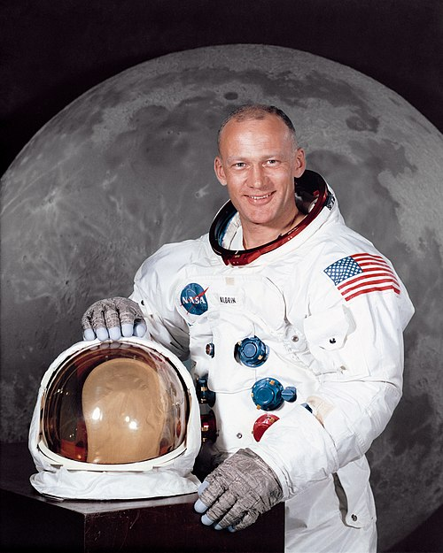

Calendar | AcmeSync daily Remote desktop
teams.example.com/call
Search
Language changes detected. Please restart the app to see the change.
15:19
Take controlChatPeopleRaiseReactViewAppsMoreCameraMicShareLeave
AcmeSync board Dashboards Projects Issues Boards
GW-101 Gateway sends tokens to the provider first
GW-102 Refunds wait for an approval
GW-103 Teams move their clients one by one
GW-104 Release board ships every Friday
GW-105 Service desk closes tickets after seven days
GW-106 Retry archived documents once a night
GW-107 Render the payload for the contract
GW-108 Map the approval answer to a status
GW-109 Move the token check into the gateway
GW-110 Log every refused request with its reason
GW-111 Show the release notes on the board
GW-112 Remove the old fallback for missing ids
GW-113 Keep the client list sorted by name
GW-114 Split the payload into header and body
GW-115 Test the approval answer with real data
GW-116 Plan the move of the second client group
GW-117 Write the guide for the new gateway
GW-118 Archive closed tickets after one year
GW-102 Refunds wait for an approval
GW-103 Teams move their clients one by one
GW-104 Release board ships every Friday
GW-105 Service desk closes tickets after seven days
GW-106 Retry archived documents once a night
GW-107 Render the payload for the contract
GW-108 Map the approval answer to a status
GW-109 Move the token check into the gateway
GW-110 Log every refused request with its reason
GW-111 Show the release notes on the board
GW-112 Remove the old fallback for missing ids
GW-113 Keep the client list sorted by name
GW-114 Split the payload into header and body
GW-115 Test the approval answer with real data
GW-116 Plan the move of the second client group
GW-117 Write the guide for the new gateway
GW-118 Archive closed tickets after one year
GW-103 Teams move their clients one by one
Status: backlog
Priority: major
Each team moves its clients to the new gateway in its own sprint. The old route stays open until the last client has moved.
Acceptance
Every client answers through the gateway.
No request takes the old route for a week.
Open points
Who switches the old route off.
Status: backlog
Priority: major
Each team moves its clients to the new gateway in its own sprint. The old route stays open until the last client has moved.
Acceptance
Every client answers through the gateway.
No request takes the old route for a week.
Open points
Who switches the old route off.
JB


MH
KL
TS
RN
AD